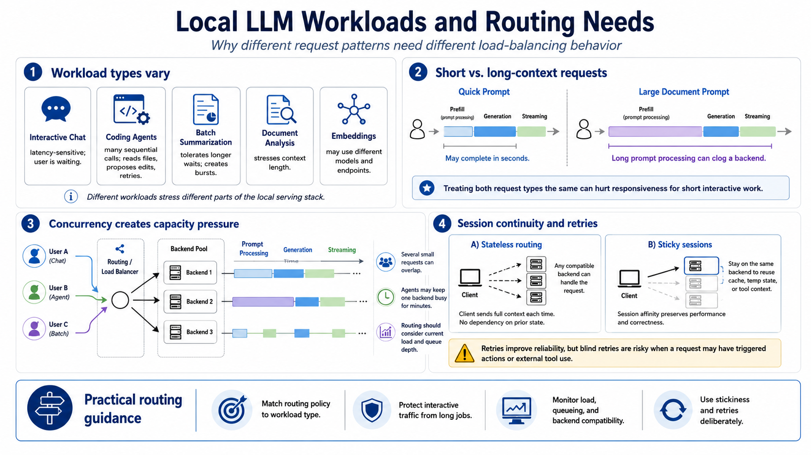

Workload Patterns and Routing Needs
Connecting to LMS... Progress: in progress

Narration
Local LLM workloads vary widely. Interactive chat is latency-sensitive because a person is waiting. Coding agents may issue many sequential calls while reading files, proposing edits, and retrying. Batch summarization can tolerate longer waits but may create bursts. Document analysis stresses context length. Embedding jobs may use different models and endpoints entirely.
Short requests and long-context requests create different routing needs. A quick prompt may finish in seconds. A large document prompt may spend significant time in prompt processing before generation begins. If those requests are treated as identical, one backend can become clogged with long jobs while another could have served short interactive work quickly.
Concurrency turns simple user behavior into real capacity pressure. Several people may each think they are making one request, while the service sees overlapping prompt processing, token generation, and streaming connections. A coding assistant or tool-using agent may keep a backend busy for minutes. Routing should consider how much work each server can accept before queueing or rejecting new requests.
Session continuity and retries also matter. Stateless clients send full context with each request and can route to any compatible backend. Other workflows rely on cache behavior, temporary state, or tool context and may need sticky sessions. Retries can improve reliability after a backend failure, but blind retries are risky when a request triggered actions or external tool use.